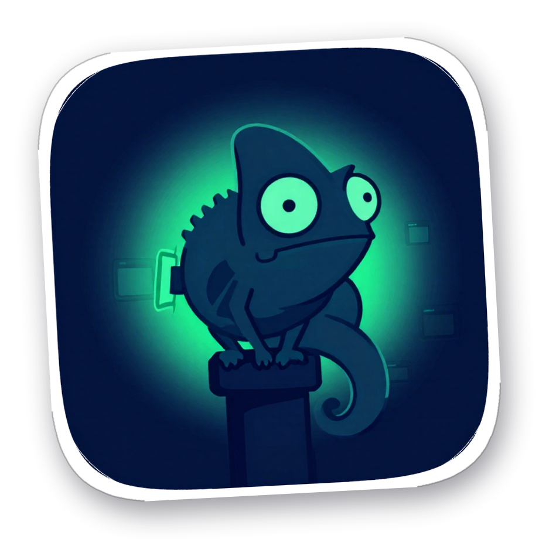

browser-bays
A Claude Code plugin that parks each session in its own coloured, persistent browser bay, so parallel agents test in parallel without sharing a browser, a login or a port.
Why
Run two or three Claude Code sessions that check UI at the same time and they end up in the same browser: one locks the profile, another loses its login, a third navigates away from the page someone else was testing. browser-bays gives every session its own bay: a browser with its own persistent profile and its own colour, so you log in once per bay and always know which window belongs to which session.
The band
Above the prompt: the session's bay in its colour, its driver and mode, and what it is for. [Focus] brings that bay's window to the front, reopening it if you closed it.
● bay red · chrome · visible · Projects → http://localhost:3001 → :3001 [Focus] [Bays]
The bays
/bays or [Bays] lists every bay, who holds it and what each session said it is using it for, with the dev-server ports already taken.
● red this session · chrome · visible · browser open app: Projects · url: http://localhost:3001 · port 3001 ● blue held (pid 87142) · chrome · visible app: Scene Builder · url: http://localhost:3002 · port 3002 ● green free · chrome · visible [Take]
| One per session | A new session takes the first free bay; /bay blue moves it. A bay frees itself when its session ends. |
| Persistent | Each bay keeps its own browser profile, so logins survive across sessions. |
| Described | Agents record the app, URL, port and notes with bay_describe, and check the ports others took with bay_info. |
| Light | An idle bay's browser closes after ten minutes and reopens on the next browser call. |
| Any driver | Chrome by default, Firefox built in, or any MCP server you add to the config. |
Install
/plugin marketplace add pelayomendez/browser-bays /plugin install browser-bays@pelayomendez-browser-bays
Requires Claude Code 2.1.330 or newer, Node.js and Chrome. Settings, drivers and commands in the README.